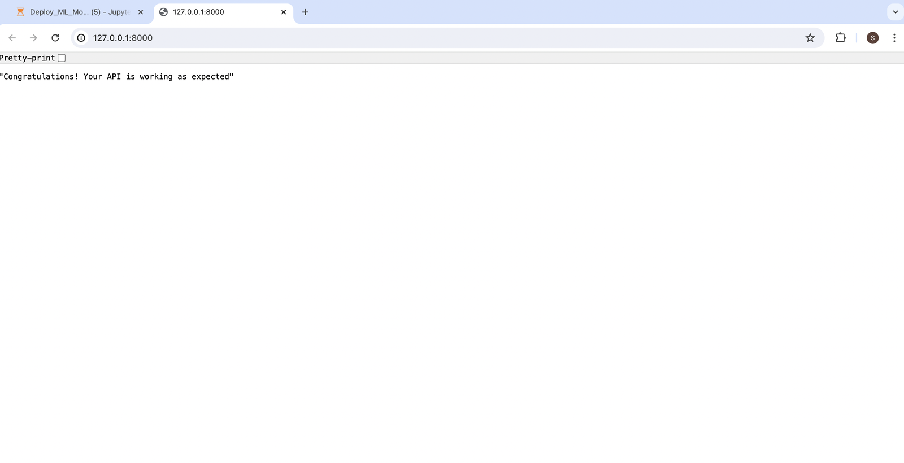
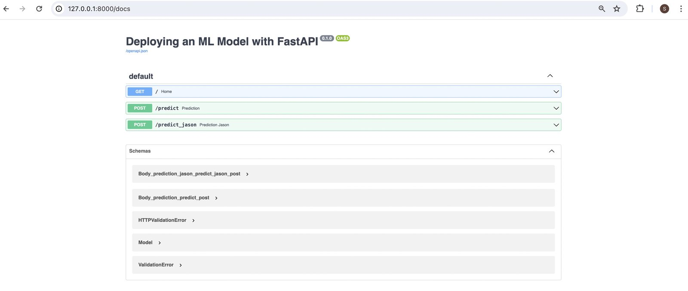
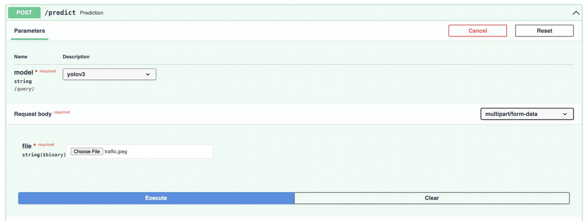
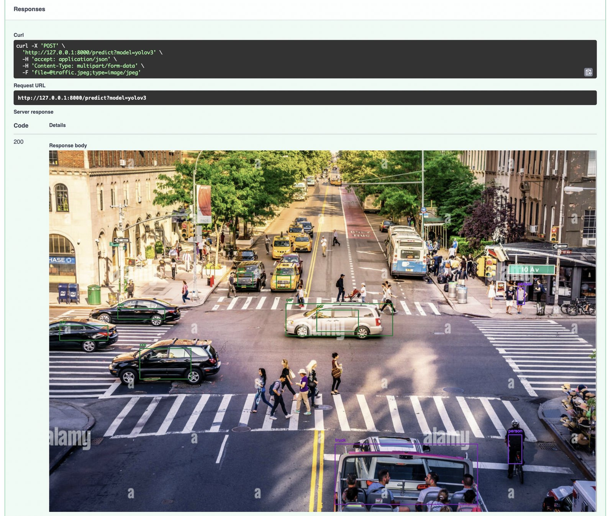
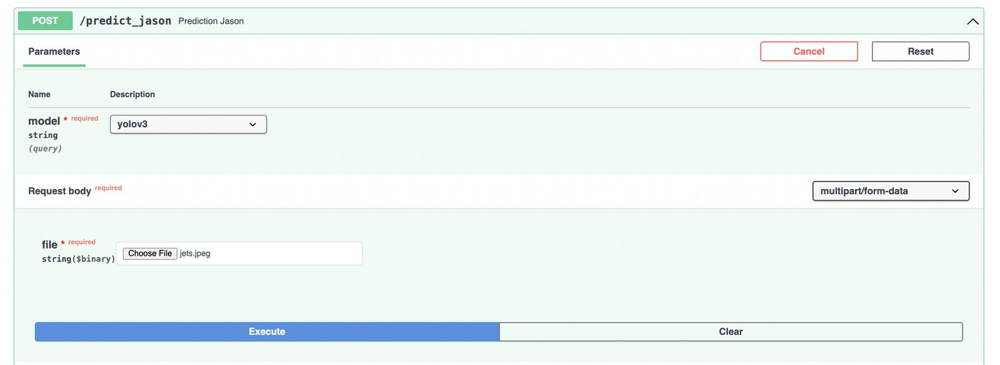
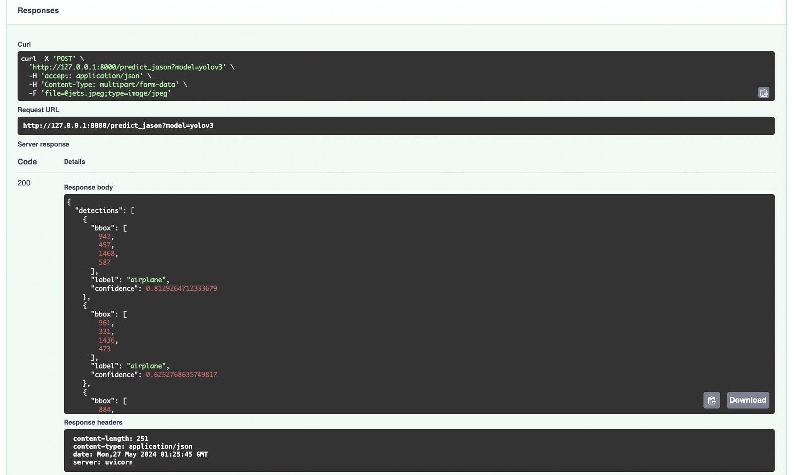

Deploy ML Models with FastAPI
Building an ML model is an essential step, but it’s not the end of the journey. In real-world applications, the model needs to be deployed so its predictions can be accessed by users and integrated into various systems. Deployment transforms the model from a static prototype into a dynamic tool that can drive real-time decision-making and provide actionable insights. There are several ways to deploy machine learning models, including cloud services, containerization, and web frameworks. One excellent option for deployment is FastAPI. FastAPI allows to create robust and high-performance APIs quickly and easily, making it an ideal choice for serving your machine learning models to end-users. In this work, we use a pre-trained computer vision model for object detection and deploy it with FastAPI to demonstrate the process.

Objectives
Inspect the Image Dataset: Understand the dataset used for training the YOLOV3 model.
Understand the YOLOV3 Model: Take a closer look at how the YOLOV3 model works and why it’s effective for object detection.
Deploy the Model Using FastAPI: Learn how to deploy the YOLOV3 model with FastAPI, transforming the model into a useful tool accessible through a web interface.
Why Deployment?
Having a model working in a Jupyter notebook is a great start, but its true potential is realized when its predictions can be accessed quickly and easily by others. Deployment transforms your model from a prototype into a practical tool that can be integrated into applications, websites, and other systems. This means your work can be used in real-world scenarios, making a tangible impact.
For instance, deploying the YOLOV3 model allows developers to incorporate its functionality into a mobile app or a surveillance system. Users can benefit from real-time object detection, whether it's identifying products in a shopping app or enhancing security measures.
Why FastAPI?
FastAPI is an excellent choice for deploying machine learning models for several reasons:
Ease of Use: FastAPI allows to create web servers to host models without having to build a complete web application or write extensive boilerplate code.
Speed: As the name suggests, FastAPI is very fast. It handles the complex work behind the scenes, allowing to write robust applications with straightforward code.
Built-in Client: FastAPI includes an interactive API documentation client, making it easy to test and interact with a server.
1. Inspecting the Images for Object Detection with YOLOV3
In this section, we'll use YOLOV3 for an object detection task. Let's take a look at the images that will be passed to the YOLOV3 model. Scanning the images will help forming an intuition about what types of objects will be detected.
from IPython.display import Image, display
# Some example images
image_files = [
'car.jpeg',
'traffic.jpeg',
'jets.jpeg',
'fruits.jpeg'
]
for image_file in image_files:
print(f"\nDisplaying image: {image_file}")
display(Image(filename=f"images/{image_file}"))2. Understand the YOLOV3 Model
Now that we have a sense of the image data we're working with, we will check how accurately the model can detect and classify objects. For this task, we will use cvlib, a simple yet powerful library for object detection that leverages OpenCV and Tensorflow.
We will use the detect_common_objects function from cvlib, which takes an image formatted as a numpy array and returns the following:
bbox: A list of lists containing bounding box coordinates for detected objects.
label: A list of labels for detected objects.
conf: A list of confidence scores for detected objects, indicating the model's certainty that the object is really in the image.
In the next step, we will craft a function, detect_and_draw_box, enabling users to interact with the deployed model. FastAPI will utilize this function when users request object detection in an image. Start by establishing a directory to store the resulting images:
import os
dir_name = "images_with_boxes"
if not os.path.exists(dir_name):
os.mkdir(dir_name)Let's define the detect_and_draw_box function. This function takes three input arguments: the filename of a file on your system, the chosen model, and a confidence level. With these inputs, it detects common objects in the image and saves a new image displaying the bounding boxes alongside the detected objects.
The function accepts the model as an input argument to provide flexibility in model selection. For this task, we'll use the yolov3-tiny model, designed for constrained environments. While it's less accurate than the full model, it still performs well. Additionally, downloading its pretrained weights is quicker.
The model's output is a vector of probabilities, indicating the model's confidence that a particular object is in the image at a specific location. The function uses the confidence level argument to set the threshold for reporting detected objects. By default, detect_common_objects uses a confidence level of 0.25. If the model is more than 25% confident in an object's location, it will draw the bounding box in the newly saved image.
import cv2
# suppress Tensorflow warnings
os.environ['TF_CPP_MIN_LOG_LEVEL'] = '3'
import cvlib as cv
from cvlib.object_detection import draw_bbox
def detect_and_draw_box(filename, model="yolov3-tiny", confidence=0.25):
"""Detects common objects on an image and creates a new image with bounding boxes.
Args:
filename (str): Filename of the image.
model (str): Either "yolov3" or "yolov3-tiny". Defaults to "yolov3-tiny".
confidence (float, optional): Desired confidence level. Defaults to 0.25.
"""
# Images are stored under the images/ directory
img_filepath = f'images/{filename}'
# Read the image into a numpy array
img = cv2.imread(img_filepath)
# Perform the object detection
bbox, label, conf = cv.detect_common_objects(img, confidence=confidence, model=model)
# Print current image's filename
print(f"========================\nImage processed: {filename}\n")
# Print detected objects with confidence level
for l, c in zip(label, conf):
print(f"Detected object: {l} with confidence level of {c}\n")
# Create a new image that includes the bounding boxes
output_image = draw_bbox(img, bbox, label, conf)
# Save the image in the directory images_with_boxes
cv2.imwrite(f'images_with_boxes/{filename}', output_image)
# Display the image with bounding boxes
display(Image(f'images_with_boxes/{filename}'))Let's try it out for the example images.
for image_file in image_files:
detect_and_draw_box(image_file) It appears that the object detection performed quite ok, it detects some objects while miss-detects some objects as well. This problem might come from that there are multiple objects in the model or the model detects objects with low confidence as in the fruits image. One potential explanation is that the model did detect the other fruits but with a confidence level below 0.25. Let's investigate whether this hypothesis by lowering the confidence:
Lowering the Confidence Threshold resulted in the model successfully detecting more of the fruits. This discrepancy typically arises when the confidence level is exceptionally low. It's crucial to exercise caution when adjusting parameters like this (model complexity), as doing so may lead to unintended outcomes. Consider the deployment environment: is rapid but less accurate prediction preferable, or is precision paramount? In this work, we will not consider to improve the model accuracy since we focus on the deployment part. There are several newer models that provide better detection performance.
3. Deploying the model using FastAPI
Now that we've gained insight into how the model functions, it's time to deploy it! Are we feeling excited? :)
Before delving into deployment, let's briefly review some key concepts and how they apply to FastAPI. You can access the FastAPI docs here. Additionally, let's create a directory to store the images uploaded to the server.
dir_name = "images_uploaded"
if not os.path.exists(dir_name):
os.mkdir(dir_name)Client-Server Model
Deployment typically involves placing all the necessary software for prediction on a server. This allows a client to interact with the model by sending requests to the server. The server acts like a waiter at a restaurant, fulfilling client requests by providing specified options, such as delivering food, explaining the menu, or denying requests if necessary.
The full client-server interaction is complex, but there are key concepts to grasp. The machine learning model resides on a server, awaiting prediction requests from clients. Clients supply the required information for making predictions, often batching multiple predictions in a single request. The server utilizes this information to generate predictions, returning them to the client via its API.
HTTP Requests
Communication between client and server occurs through the HTTP protocol. HTTP defines common actions called requests, using verbs such as GET and POST. GET retrieves information from the server, while POST provides information to the server for processing. Interactions with machine learning models on a server typically involve POST requests, as clients need to supply information required for predictions.
Endpoints
Multiple machine learning models can be hosted on the same server, each accessible through a unique endpoint. An endpoint is represented by a pattern in the URL, acting as a destination for client requests. With FastAPI, endpoints are defined by creating functions that handle the logic for each endpoint. These functions are decorated with information about the HTTP method and URL pattern that trigger their execution.
For example, a function decorated with @app.get("/my-endpoint") handles HTTP GET requests for the "/my-endpoint" URL pattern. Similarly, a function decorated with @app.post("/my-other-endpoint") handles HTTP POST requests for the "/my-other-endpoint" URL pattern, expecting parameters provided by the client for processing.
Understanding these concepts lays the groundwork for effectively deploying machine learning models with FastAPI.
Spinning up the server
We will now create the server using FastAPI and uvicorn.
import io
import uvicorn
import numpy as np
import nest_asyncio
from enum import Enum
from fastapi import FastAPI, UploadFile, File, HTTPException
from fastapi.responses import JSONResponse, StreamingResponse
# Assign an instance of the FastAPI class to the variable "app".
# You will interact with your api using this instance.
app = FastAPI(title='Deploying an ML Model with FastAPI')
# List available models using Enum for convenience. This is useful when the options are pre-defined.
class Model(str, Enum):
yolov3tiny = "yolov3-tiny"
yolov3 = "yolov3"
# By using @app.get("/") you are allowing the GET method to work for the / endpoint.
@app.get("/")
async def home():
return "Congratulations! Your API is working as expected"
# This endpoint handles all the logic necessary for the object detection to work.
# It requires the desired model and the image in which to perform object detection.
@app.post("/predict")
async def prediction(model: Model, file: UploadFile = File(...)):
# 1. VALIDATE INPUT FILE
filename = file.filename
fileExtension = filename.split(".")[-1] in ("jpg", "jpeg", "png")
if not fileExtension:
raise HTTPException(status_code=415, detail="Unsupported file provided.")
# 2. TRANSFORM RAW IMAGE INTO CV2 image
# Read image as a stream of bytes
image_stream = io.BytesIO(file.file.read())
# Start the stream from the beginning (position zero)
image_stream.seek(0)
# Write the stream of bytes into a numpy array
file_bytes = np.asarray(bytearray(image_stream.read()), dtype=np.uint8)
# Decode the numpy array as an image
image = cv2.imdecode(file_bytes, cv2.IMREAD_COLOR)
# 3. RUN OBJECT DETECTION MODEL
# Run object detection
bbox, label, conf = cv.detect_common_objects(image, model=model)
# Create image that includes bounding boxes and labels
output_image = draw_bbox(image, bbox, label, conf)
# Save it in a folder within the server
cv2.imwrite(f'images_uploaded/{filename}', output_image)
# 4. STREAM THE RESPONSE BACK TO THE CLIENT
# Open the saved image for reading in binary mode
file_image = open(f'images_uploaded/{filename}', mode="rb")
# Return the image as a stream specifying media type
return StreamingResponse(file_image, media_type="image/jpeg")
# Prediction and output as a JSON file
@app.post("/predict_jason")
async def prediction_jason(model: Model, file: UploadFile = File(...)):
# 1. VALIDATE INPUT FILE
filename = file.filename
fileExtension = filename.split(".")[-1] in ("jpg", "jpeg", "png")
if not fileExtension:
raise HTTPException(status_code=415, detail="Unsupported file provided.")
# 2. TRANSFORM RAW IMAGE INTO CV2 image
image_stream = io.BytesIO(file.file.read())
image_stream.seek(0)
file_bytes = np.asarray(bytearray(image_stream.read()), dtype=np.uint8)
image = cv2.imdecode(file_bytes, cv2.IMREAD_COLOR)
# 3. RUN OBJECT DETECTION MODEL
bbox, label, conf = cv.detect_common_objects(image, model=model)
# 4. PREPARE JSON RESPONSE
detections = []
for i in range(len(bbox)):
detections.append({
"bbox": bbox[i],
"label": label[i],
"confidence": conf[i]
})
return JSONResponse(content={"detections": detections})
# Allows the server to be run in this interactive environment
nest_asyncio.apply()
# This is an alias for localhost which means this particular machine
host = "127.0.0.1"
# Spin up the server!
uvicorn.run(app, host=host, port=8000)We created two APIs, /predict and /predict_jason, that output the result as detected image and locations in JSON format.
After running the code, we can go to the endpoint, http://127.0.0.1:8000/ , and check whether the endpoint is running properly by checking the message.
If the endpoint is running properly, we can go to http://127.0.0.1:8000/docs
to lunch the web browser interface and try using the API endpoint and test these 2 APIs, the steps are shown as below,






While running the endpoint, we can also use another notebook to call the endpoint by the code below as well,
import requests
# Define the URL of the predict endpoint
predict_url = 'http://127.0.0.1:8000/predict'
# Define the model and file path
model = 'yolov3-tiny' # Ensure this matches the enum value exactly
file_path = 'images/traffic.jpeg' # Replace with the actual path to your image file
# Open the image file in binary mode
with open(file_path, 'rb') as file:
# Prepare the payload for the POST request
files = {'file': file}
data = {'model': model} # model should be sent as a query parameter
# Send the POST request to the predict endpoint with the model as a query parameter
response = requests.post(predict_url, files=files, params=data)
# Check if the request was successful
if response.status_code == 200:
# Save the returned image
with open('output.jpg', 'wb') as output_file:
output_file.write(response.content)
print("Output image saved as 'output.jpg'")
else:
# Print an error message if the request was not successful
print(f"Error: {response.status_code}, {response.text}")Conclusion
Deploying an ML model with FastAPI is an exciting and straightforward process. It allows your model to be easily accessed and utilized by others, significantly increasing its practical value. FastAPI’s simplicity and performance make it a great choice for deploying ML models, whether for prototyping or production environments.
Extra on FastAPI vs Flask!!
In the realm of Python web development, two frameworks stand out as popular choices for building APIs: FastAPI and Flask. While both offer powerful tools for creating web applications, they differ in their approach, features, and suitability for various use cases. FastAPI, known for its exceptional performance and asynchronous support, caters to applications requiring high scalability and real-time communication. On the other hand, Flask, with its simplicity and flexibility, appeals to developers seeking rapid prototyping and minimal configuration. In this comparison, we'll explore the key differences between FastAPI and Flask, along with real-life applications where each excels.
Performance and Speed:
FastAPI: FastAPI is designed for high performance and speed. It leverages asynchronous programming, making it ideal for handling heavy workloads and concurrent requests efficiently.
Flask: Flask is lightweight and flexible but lacks native support for asynchronous programming. While it's fast for smaller applications, it may struggle to handle large-scale applications or heavy traffic compared to FastAPI.
Type Annotations and Validation:
FastAPI: FastAPI uses Python type annotations for request and response handling, enabling automatic data validation and documentation generation through tools like Pydantic. This leads to more robust and self-documenting APIs.
Flask: Flask does not have built-in support for type annotations or data validation. Developers typically rely on external libraries like Marshmallow for request validation and documentation.
Documentation:
FastAPI: FastAPI automatically generates interactive API documentation using OpenAPI and Swagger UI. This documentation is comprehensive, providing information about request and response formats, query parameters, and more.
Flask: Flask does not provide built-in support for generating API documentation. Documentation needs to be written manually or generated using third-party tools like Flask-RESTPlus.
Ease of Use:
FastAPI: FastAPI comes with features like automatic dependency injection, automatic data validation, and integrated WebSocket support, which streamline development and make it easy to build complex APIs.
Flask: Flask is known for its simplicity and ease of use, making it a popular choice for small to medium-sized applications. However, developers may need to rely on external libraries for additional features like data validation and documentation.
Community and Ecosystem:
FastAPI: FastAPI is relatively newer compared to Flask but has gained significant popularity due to its performance and modern features. It has an active and growing community, with many plugins and extensions available.
Flask: Flask has been around for longer and has a mature ecosystem with a wide range of extensions and plugins for various functionalities. It has a large community and extensive documentation, making it easy to find solutions to common problems.
Real-Life Applications:
FastAPI: FastAPI's performance, asynchronous support, and automatic documentation generation make it an excellent choice for building APIs that require high scalability and real-time communication. Real-life applications where FastAPI shines include:
Real-time Data Streaming: FastAPI's asynchronous support makes it well-suited for handling real-time data streaming applications, such as chat applications, live tracking systems, or financial trading platforms.
Microservices Architecture: FastAPI's lightweight and high-performance nature make it ideal for building microservices that need to handle a large number of concurrent requests efficiently.
Machine Learning Model Deployment: FastAPI's integration with Pydantic for data validation and OpenAPI for automatic documentation generation makes it an excellent choice for deploying machine learning models as APIs. This is particularly useful for applications like recommendation systems, image recognition APIs, or natural language processing services.
Flask: Flask's simplicity, flexibility, and large ecosystem of extensions make it suitable for a wide range of applications, particularly those where rapid prototyping or minimal configuration is required. Real-life applications where Flask excels include:
Web Applications: Flask's lightweight nature and ease of use make it a popular choice for building web applications, particularly for startups or small businesses looking to develop prototypes or MVPs (Minimum Viable Products) quickly.
Content Management Systems (CMS): Flask's flexibility allows developers to tailor CMS solutions to specific requirements, making it suitable for building custom content management systems for blogs, forums, or small-scale e-commerce sites.
RESTful APIs: Flask's simplicity and extensibility make it a solid choice for building RESTful APIs for applications like mobile app backends, IoT (Internet of Things) devices, or internal services within organizations.
When deciding between FastAPI and Flask for a real-life application, consider factors such as performance requirements, scalability, development speed, and the specific needs of your project. FastAPI is often preferred for applications requiring high performance, real-time communication, or machine learning model deployment, while Flask is favored for its simplicity, flexibility, and ease of use, making it suitable for a wide range of web development projects.
In summary, FastAPI is a modern web framework known for its high performance, built-in support for asynchronous programming, and automatic data validation and documentation. Flask, on the other hand, is lightweight, flexible, and easy to use, making it suitable for smaller projects or applications where simplicity is key. The choice between FastAPI and Flask depends on the specific requirements and preferences of the project.